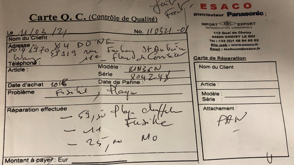
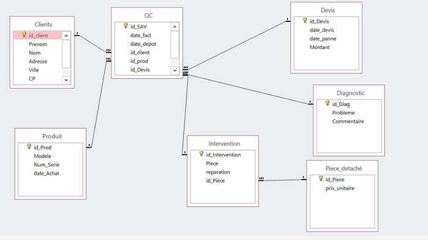
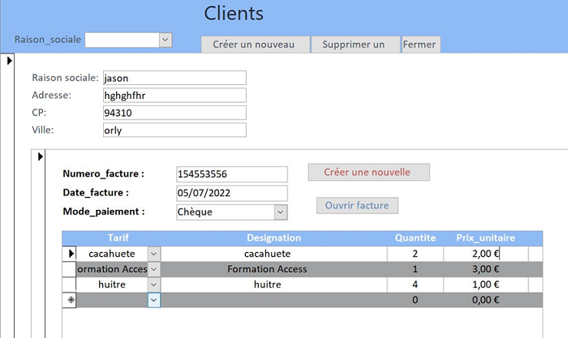
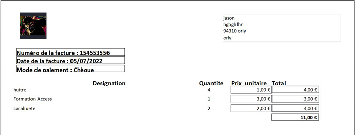

Retour aux projets
// stage · Transtec International
Facturation automatisée
Conception d'un modèle de données et d'une application Access pour automatiser la facturation : clients, factures et lignes de facture.
Démarche
À partir du modèle de facture existant, nous avons conçu le modèle conceptuel des données (MCD), puis créé la base de données correspondante. Nous avons ensuite développé la saisie des clients et des factures, jusqu'à la génération de la facture finale.








Ce que j'en retiens
Ce stage m'a montré l'efficacité du travail d'équipe en informatique quand il est bien coordonné. J'ai aussi apprécié l'ambiance de l'entreprise et l'aide que chacun nous a apportée.